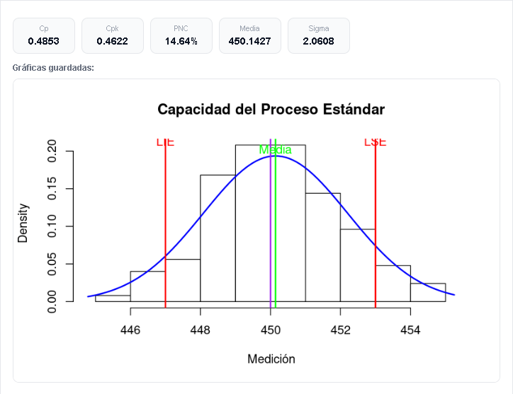
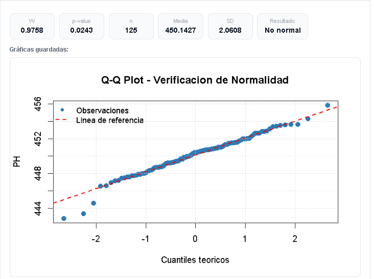
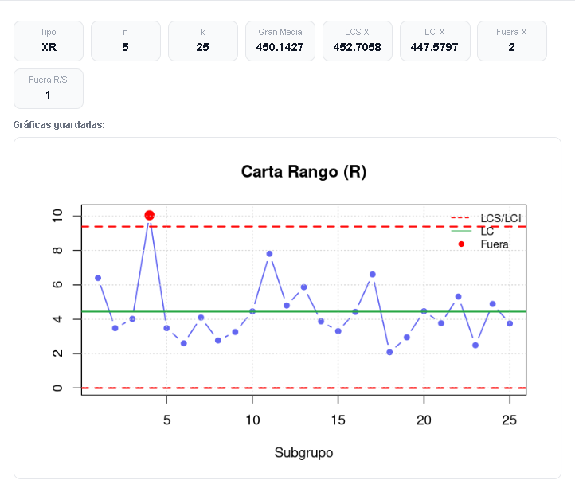
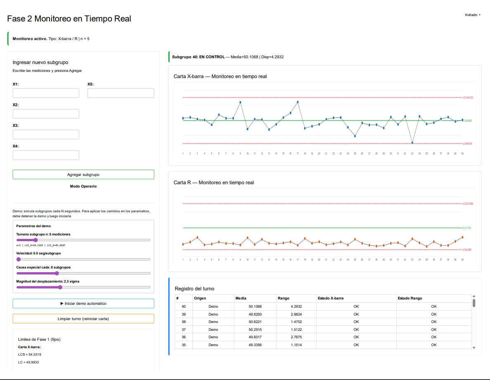
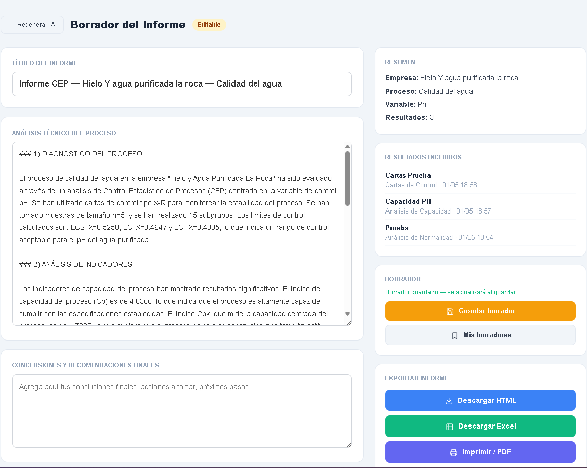
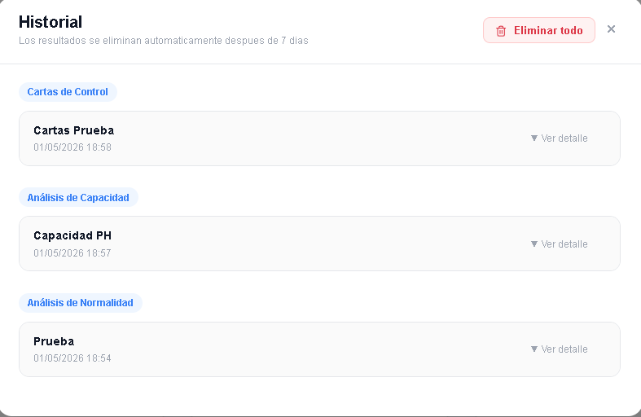
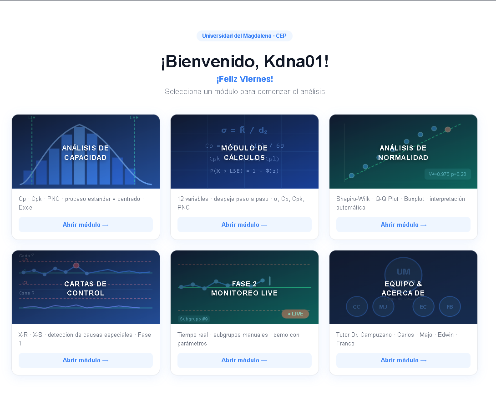

StatFlow CEP: Control Estadístico de Procesos desde la web
Aplicación web Shiny
APK Android
Datos guardados
IA para informes
Carta de control X̄-R
2 puntos en revisión
Informe con IA listo
Exportación
PDF
Modo
Operario
¿Qué es StatFlow CEP?
Un proyecto académico con enfoque profesional para analizar procesos reales.
StatFlow CEP es un software estadístico de Control Estadístico de Procesos desarrollado como proyecto académico en la Universidad del Magdalena por estudiantes de Ingeniería Industrial. Está disponible como aplicación web en Shiny y como APK Android.
Módulos principales
Herramientas para capacidad, normalidad, cartas, monitoreo e informes.
Cp / Cpk / PNC
Análisis de capacidad
Ingreso manual o por Excel. Diagnostica si el proceso es capaz, descentrado o no capaz, con lectura técnica de Cp, Cpk y PNC.

Análisis de normalidad
Incluye Shapiro-Wilk, Q-Q Plot y Boxplot para validar el comportamiento de los datos.

Cartas de control
Fase 1 y Fase 2 con detección automática de puntos fuera de control.

Monitoreo en tiempo real
Simulador ajustable, visualización en Canvas JavaScript y modo operario para planta.

Informes empresariales
Generador en 4 pasos con análisis por IA y exportación HTML, Excel y PDF.

Historial de análisis
Resultados guardados para comparación, consulta posterior y descarga de evidencia.

Formatos de captura
Plantillas listas para registrar mediciones y cargar datos al análisis.
Descarga los formatos base, diligencia las mediciones del proceso y utiliza la información como insumo para los módulos de StatFlow CEP.
Formato para toma de muestras
Plantilla en Excel para organizar datos de proceso antes del análisis de capacidad, normalidad o cartas de control.
Aplicación Android
Archivo instalable para acceder a StatFlow CEP desde dispositivos móviles Android.
Conserva la estructura del archivo para evitar errores al importar datos. Puedes duplicarlo por proceso, línea, lote o periodo de medición.
Video de presentación
Próximamente: una demostración guiada de StatFlow CEP.
Este espacio está reservado para anexar el video oficial del software: recorrido por módulos, carga de datos, interpretación de resultados y generación de informes.
Video de presentación
Disponible próximamente
Recorrido por el panel principal y selección de módulos.
Ejemplo de análisis CEP con datos reales del proceso.
Generación de informes empresariales y exportación.
Aplicabilidad
Control estadístico para procesos industriales, servicios y formación académica.
Manufactura
Hotelería
Salud
Banca
Restaurantes
Call centers
Educación
Construcción
Caso aplicado
Hielo y Agua La Roca
Uso orientado al análisis de procesos productivos y seguimiento de variabilidad.
En desarrollo
Hostal Casa Roma
Aplicación del enfoque CEP a indicadores de servicio y operación hotelera.
Diferencial
Un software accesible para aprender, documentar y operar análisis CEP.
Equipo desarrollador
Proyecto construido desde Ingeniería Industrial con acompañamiento académico.
Líder del proyecto
Carlos Arturo Cadena Cochero
Octavo semestreEstudiante de Ingeniería Industrial y administrador de propiedades turísticas. Lidera la gestión integral del proyecto, responsable del diseño, programación e implementación en R Shiny.
Diseño visual
María José Contreras
Noveno semestreEstudiante de Ingeniería Industrial. Encargada de la estética del software y apoyo en toma de decisiones durante el desarrollo del proyecto.
Desarrollo y programación
Edwin Belisario Calderón Aguilera
Noveno semestreIngeniero de sistemas y estudiante de Ingeniería Industrial. Integra sus conocimientos en soluciones estadísticas aplicadas.
Testing y metodología
Francisco Bustamante
Octavo semestreEstudiante de Ingeniería Industrial. Apoya en diseño metodológico y pruebas del software.
Tutor académico
Manuel Jesús Campuzano Hernández
Ingeniero Industrial · Ph.D. en Estadística y OptimizaciónEl software CEP cuenta con la orientación académica del Doctor Manuel J. Campuzano Hernández, docente de la Universidad del Magdalena vinculado al Programa de Ingeniería Industrial.
Acceso al aplicativo
Empieza a analizar tus procesos con StatFlow CEP
El aplicativo real está desplegado en Shiny. Abre StatFlow CEP en una nueva pestaña para cargar datos, revisar módulos y generar resultados.
